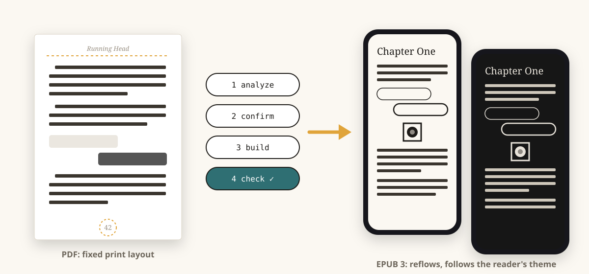
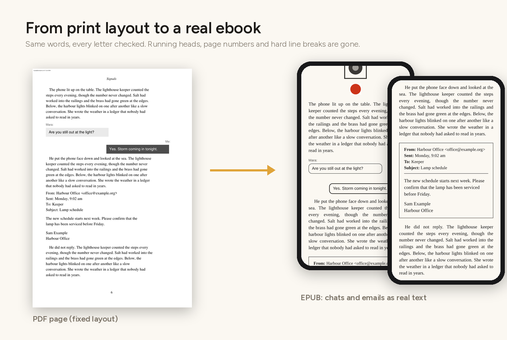
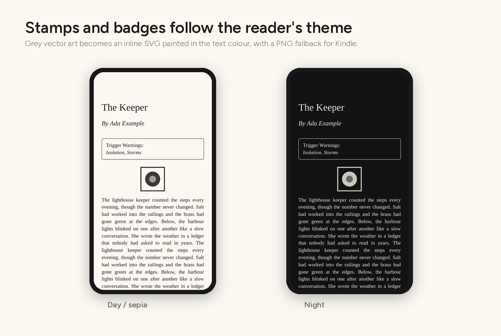
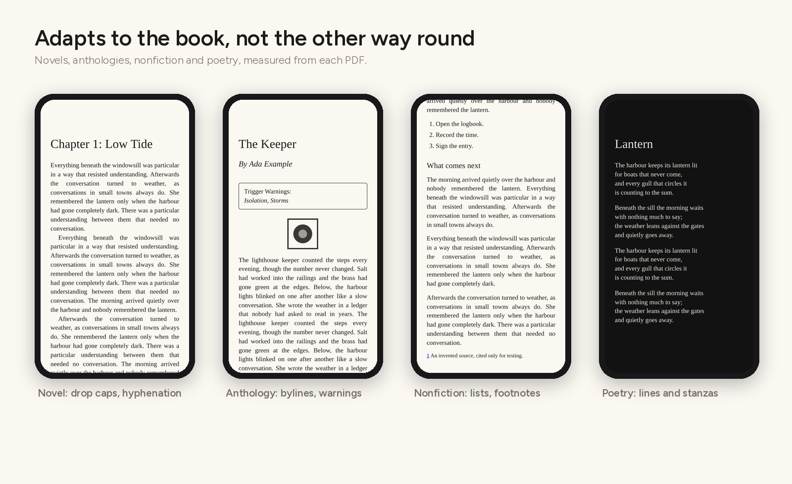
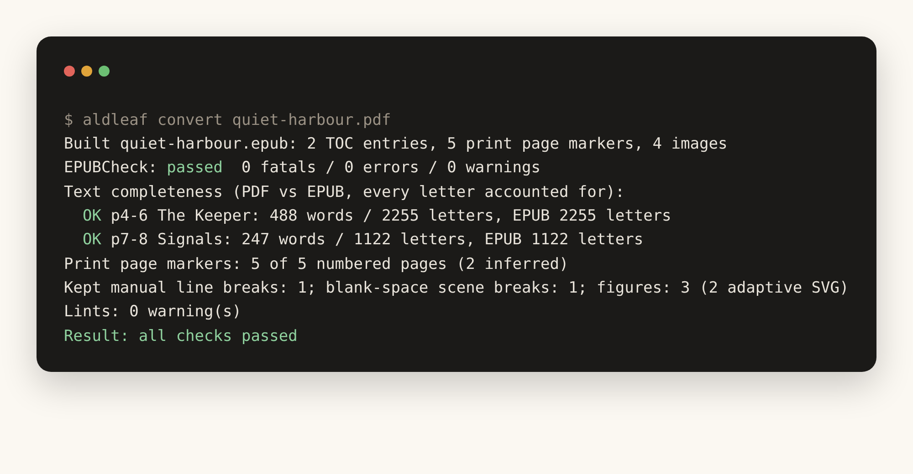

Aldleaf · PDF to EPUB, done properly
For authors, writers and publishers who self-publish. Aldleaf is a free, open-source PDF to EPUB converter. It reads the layout of your text-based PDF book and builds a clean, validated EPUB 3 you can publish on any platform you choose. It works out what each font is for, finds the chapters and reads the page numbers, then checks every letter against the PDF. Writing in Word or another editor? Export your final print-ready version as a PDF first.
REAL Rating 3 · Moderate AI
Authors, writers and publishers who self-publish, and who have a print-ready PDF but no proper ebook.
You laid out your book for print (InDesign, Affinity, Word, Vellum, Scribus, LaTeX) and want an ebook without paying for a conversion or retyping it.
Turn your back catalogue and new print files into consistent, accessible EPUBs.
Collections with many authors, bylines, dedications and content warnings.
Readers can also use it on their own DRM-free copy of a book, for their own devices. It is not for converting or sharing books you don't have the rights to.
One-click converters flatten a PDF into lines. Aldleaf measures it, shows you what it found, and only builds once you agree.
Measures spacing, indents and margins, works out the role of every font@size, finds sections, bylines and page numbers.
Everything lands in one readable config file. Fix a role, a title or the language; nothing is hidden in code.
Semantic XHTML, EPUB 3 navigation, page list, NCX fallback, accessibility metadata, cover and optional fonts.
EPUBCheck, every letter of every section compared with the PDF, page-marker coverage, lints and side-by-side screenshots.
Running heads, page numbers and hard line breaks are removed by position. Paragraphs split across pages are rejoined. Chats, emails and on-screen text become real, labelled text.

Grey vector artwork such as rating stamps, logos and ornaments becomes an inline SVG painted in the reader's text colour. It stays sharp, has no white box, and turns light in night mode. Kindle gets a transparent PNG fallback. Colour art stays a picture.
art: png in the config to keep every piece of artwork as a picture.
Nothing is tuned to one title. The profile is measured from each PDF and written into the config.

First-line indents or spaced paragraphs, justified or ragged-right, drop caps, "Chapter 1" + title headings. Layout hyphens are removed and real compounds kept.
Per-story bylines, dedications and content-warning boxes. Story authors become contributors in the metadata.
Subheadings, bullet and numbered lists, footnotes turned into pop-up notes linked both ways.
Every line break and stanza kept as set.
Their own printed marker or blank space, never added or removed by a rule. Prefer one ornament everywhere? scene_breaks: ornament.
Every page gets a marker, including unnumbered chapter openers. Apple Books shows the print numbers, so readers can cite them.
Each build writes a QA report. It compares letters rather than words, so drop caps and removed hyphens don't hide a missing line.
| Check | What it catches |
|---|---|
| EPUBCheck | Anything Apple Books or Send to Kindle would reject |
| Completeness | Lost or duplicated text, per section |
| Page markers | Print pages without a marker |
| Lints | Leftover page numbers, unjoined wraps, missed paragraph breaks |
--reference | Structural differences from a hand-made edition (no text compared) |
--visual | Side-by-side PDF and EPUB screenshots |

Start from a PDF. Aldleaf reads PDF files only for now. If your book is in Word, Pages, Google Docs, Scrivener or another editor, first export your final, edited, print-ready version as a PDF (for example File → Save As → PDF), then convert that PDF.
Python 3.10+. EPUBCheck needs Java.
pip install git+https://github.com/5aahil/aldleaf-pdf2epub aldleaf fetch-epubcheck aldleaf analyze book.pdf # writes book.aldleaf.yaml: review it aldleaf build book.pdf # book.epub + book_QA.txt # or both at once: aldleaf convert book.pdf --cover cover.jpg
Then open the EPUB in Apple Books, or upload it at Send to Kindle. The config reference explains every option.
The companion Claude skill pdf-to-epub runs the whole loop with you. It analyses the PDF, checks the proposed config against rendered pages, builds and checks the EPUB, and hands over the result with a device checklist.
Claude Code:
/plugin marketplace add 5aahil/aldleaf-pdf2epub /plugin install aldleaf@aldleaf
Claude app: download pdf-to-epub-skill.zip, then go to Customize → Skills → + → Upload a skill. Code execution must be on. Read the skill first.
For authors and publishers converting their own books, and readers converting their own copy for their own devices. Copy-protected PDFs are refused. Buyer stamps are left out unless you pass --stamp. PDFs, EPUBs and configs are never committed: CI enforces it. Aldleaf collects no data: no accounts, no analytics, no server. Read the privacy policy.
Word, Pages and other editor files (export a PDF first), scanned PDFs without a text layer (detected and refused), multi-column body text, large tables and maths.
REAL Rating 3 (Moderate AI), self-assessed on Real Good AI's REAL Rating scale. AI assisted building-block components (code, documentation and illustrations) under the author's direction. The author defined the requirements and design, tested the toolkit against real books, reported and checked the fixes, and made the final decisions.